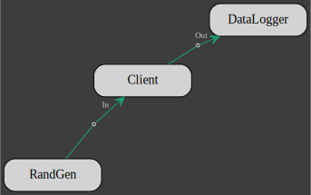
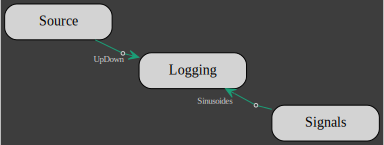
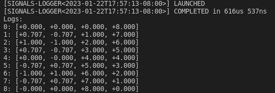
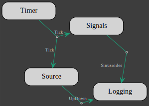
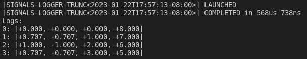

Introduction
gmt_dos-actors is the Rust crate that is the backbone of the computing framework for the integrated model of the Giant Magellan Telescope.
It is based on the actor model but specially adapted for integrated modeling purposes.
In order to use the crate, you must have Rust installed on your machine and be familiar with the Rust language
The minimum Rust version for the gmt_dos-actors is 1.66.0
GMT Actors Model
A GMT integrated model is a collection of actors, each actor executing a specific task or set of tasks and exchanging data at predefined sampling rates.
Actors
An actor is composed on 3 elements:
- a set of inputs,
- a set of outputs,
- a client.
Both outputs and inputs are optional but an actor must have at least either one input or one output. Inputs and outputs may be sampled at a different rate, but the rate must be the same for all inputs and for all outputs.

An actor runs within its own thread independently of other actors and perform 3 functions:
- collect and read inputs into the client,
- update the state of the client,
- write and distribute the outputs from the client to other actors.
These 3 functions are excuted sequentially within a loop.
A client must comply with the definition of the actor interface.
The interface consists in 3 traits: Update, Read and Write.
A client must:
- implement the
Updatetrait, - have an implementation of the
Readtrait for each input, - have an implementation of the
Writetrait for each output.
Actor inputs and outputs are given a unique type, usually an empty Enum.
Each input and output must implement the UniqueIdentifier trait which associated type DataType is set to the primitive type of the client data.
As an example, lets write an interface for a client which task is to multiply an integer by e. Lets define
- the client:
#[derive(Default)]
struct Client {
data: i32,
}- the input
In:
#[derive(UID)]
#[uid(data = "i32")]
enum In {}- the output
Out:
#[derive(UID)]
#[uid(data = "f32")]
enum Out {}Each input and output is given a unique type (here an empty Enum) that implements the UniqueIdentifier trait with the derive macro UID.
The input/ouput primitive types (i32 for the input and f32 for the ouput) are affected to the associated type DataType of the UniqueIdentifier traits.
And now lets build the interface:
- update is empty, this simple task can be done at the output
impl Update for Client {}- read input
impl Read<In> for Client {
fn read(&mut self, data: Arc<Data<In>>) {
self.data = **data;
}
}
- write output
impl Write<Out> for Client {
fn write(&mut self) -> Option<Arc<Data<Out>>> {
Some(Arc::new(Data::new(self.data as f32 * std::f32::consts::E)))
}
}Actors exchange their clients data that is contained inside the structure Data.
The type of the client data can be anything as long as the input that receives it or the output that sends it, implements the UniqueIdentifier trait.
Once the actor to client interface has been written, the client can then be used to build an actor.
Here is the signature of the Actor type:
struct Actor<C, const NI: usize = 1, const NO: usize = 1> where C: UpdateAn actor takes 3 generic type parameters:
C: the type of the client,NI: the sampling rate of the inputs,NO: the sampling rate of the outputs.
Sampling rates are given as ratio between the simulation sampling frequency and the actor inputs or outputs sampling frequency.
The where clause required that the client implements the Update trait, meaning that anything can be an actor's client as long as it implements the Update trait.
Actors implements the From trait for any type that implements the Update trait.
As a consequence, a client can be converted into an actor with:
let actor = Actor::<Client,1,1>::from(client);When using the default value (1) for the inputs and outputs rate, they can be omitted:
let actor = Actor::<Client>::from(client);In that case, the compiler is also able to infer the client type:
let actor = Actor::<_>::from(client);or we can use the Into syntax:
let actor: Actor::<_> = client.into();An actor with no inputs must set NI to 0 or use the type alias Initiator defined as Initiator<C, const NO: usize = 1> = Actor<C, 0, NO>:
let no_input_actor = Initiator::<_>::from(client);An actor with no outputs must set NO to 0 or use the type alias Terminator defined as Terminator<C, const NI: usize = 1> = Actor<C, NI, 0>:
let no_output_actor = Terminator::<_>::from(client);The conversion methods from and into consume their arguments meaning that the client is no longer available once the actor has been created.
This is not always desirable, instead the new method of Actor can be used to pass a reference to the client into an actor.
It is worth noting that all the inputs and outputs of an actor will also be given a copy of the reference to the client in order to pass data to it and to get data from it. And because an actor performs many of its own tasks asynchronously, a client must first be wrapped into the thread-safe smart pointers Arc and Mutex like so
let thread_safe_client = Arc::new(Mutex::new(client));followed by the actor declaration
let actor = Actor::new(thread_safe_client.clone());Note that all types that implements the Update trait can be converted into a thread safe type with
let thread_safe_client = client.into_arcx();A unique name can be given to an actor. The name will be use to identify the actor's client in the model flowchart. The actor's name (here "aleph") can be set either like this:
let actor = Actor::<_>::from((client, "aleph"));or like this
let actor: Actor::<_> = (client, "aleph").into();or even like this
let actor = Actor::new(thread_safe_client.clone()).name("aleph");Model
A model is a network of clients connected to each other by pairs of output/input. The actor/client interfaces specify the tasks that are going to be executed and the topology of the network defines the order in which the tasks are executed.
A pair of output/input defines a unique channel with a sender and a receiver. The sender is given to the output and the receiver to the input.
Each actor performs the following task sequentially in a never ending inner loop and asynchronously with respect to the other actors :
- if any inputs, receive inputs & invoke client
Readtrait implementation on each input, - update client state with the client
Updatetrait implementation, - if any outputs, invoke the client
Writetrait implementation on each output & send outputs.
The default behavior of an actor is to pause the inner loop both until all the inputs have been received and until all the outputs have been received by other actors.

In the model above, the network topology imposes the following sequence of events (from top to bottom):
| A | B | C | D | |
|---|---|---|---|---|
| 1 | Update | - | - | - |
| 2 | Write::<AB,ABC> | - | - | - |
| 3 | - | Read::<AB,ABC> | Read::<ABC> | - |
| 4 | Update | - | Update | - |
| 5 | Write::<AB,ABC> | - | Write::<CB,CD> | - |
| 6 | - | Read::<CB> | - | Read::<CD> |
| 7 | - | Update | Read::<ABC> | - |
| 8 | - | Write::<BD1,BD2> | Update | - |
| 9 | - | - | Write::<CB,CD> | Read::<BD1,BD2> |
| 10 | - | Read::<AB,ABC,CB> | - | Update |
| 11 | Update | Update | - | Read::<CD> |
| 12 | ... |
Note that events in the same row may occur simultaneously thanks to the asynchronous nature of the actors.
Laying out the network consists in building actors outputs and relaying them to other actors inputs. A pair of output and input must meet the following requirements:
- the client of the output actor must implement the trait
Write<I> - the client of the input actor must implement the trait
Read<O> IandOmust be of the same type i.e.I=O- the ouput rate
NOmust be equal to the input rateNI(NO=NI)
A model will not compile in any of the above requirements is not met.
For client A that gives:
A.add_output().build::<AB>().into_input(&mut B);
A.add_output().multiplex(2).build::<ABC>()
.into_input(&mut B)
.into_input(&mut C);As illustrated above, an output can be multiplexed and sent to multiple inputs.
Then for B:
B.add_output().build::<BD1>().into_input(&mut D);
B.add_output().build::<BD2>().into_input(&mut D);and C :
C.add_output().build::<CB>().into_input(&mut B);
C.add_output().build::<CD>().into_input(&mut D);Per default, an actor inner loop is blocked until all its outputs have been read by the associated inputs as a guarantee that the data has been effectively received.
This is not always necessary, particulary for a client that acts as a data sink like D.
The links to D can be rewritten:
B.add_output().unbounded().build::<BD1>().into_input(&mut D);
B.add_output().unbounded().build::<BD2>().into_input(&mut D);
C.add_output().unbounded().build::<CD>().into_input(&mut D);and the outputs BD1, BD2 and CD won't block their actors inner loop anymore.
Once all the connections have been set-up, we can assemble the actors into a model:
let mut model = Model::new(vec![Box::new(A),Box::new(B),Box::new(C),Box::new(D)]);check the model for errors, run it and wait for it to finish:
model.check()?.run().await?;Note that the run method cannot be invoked on an unchecked model.
A flow chart of the model can be obtained with the flowchart method.
Each client is identified by either its type or the actor's name if one was given.
Combining all the Model methods in a single call gives:
Model::new(vec![Box::new(A),
Box::new(B),
Box::new(C),
Box::new(D)])
.flowchart()
.check()?
.run()
.await?;The flowchart is written to the file integrated_model.dot.svg.
When an output detects that the data the client has written to its buffer is None, it closes the channel it belongs to and return an error to the actor that forces the actor to shut down.
When an actor shuts down its inputs and outputs close the channels they are part of. A closed channel also generates an error that is caught by the actors at both end of the channel and forces these actors to also shut down and so, by a domino effect, all the actors are terminated and the model gracefully comes to an end.
Working example
Building upon the example in the previous section, lets add 2 more clients:
- a random generator
struct RandGen {
data: Vec<i32>,
}
impl RandGen {
pub fn new(n_sample: usize) -> Self {
let mut data = vec![0i32; n_sample];
let mut rng = WyRand::new();
rng.fill(&mut data);
Self { data }
}
}
impl Update for RandGen {}
impl Write<In> for RandGen {
fn write(&mut self) -> Option<Arc<Data<In>>> {
self.data.pop().map(|val| Arc::new(Data::new(val)))
}
}- a data logger
#[derive(Default)]
struct DataLogger {
data: Vec<f32>,
}
impl Update for DataLogger {}
impl Read<Out> for DataLogger {
fn read(&mut self, data: Arc<Data<Out>>) {
self.data.push(**data);
}
}With all the clients defined with an actor/client interface, the actors are instanciated with
let mut source = Initiator::<_>::from(RandGen::new(1_000_000));
let mut filter = Actor::<_>::from(Client::default());
let mut log = Terminator::<_>::from(DataLogger::default());Each actor requires 3 generic type parameters: the client type and 2 constants: the inputs and outputs sampling rates. The inputs rate is zero if the actor has no inputs and the outputs rate is zero if the actor has no outputs. The default sampling rate for inputs and outputs is 1.
The next step is to build the network. The links between actors are established by successively creating channels between an actor output and the input of another actor, both the output and the input must have been given the same type and the same sampling rate.
source.add_output().build::<In>().into_input(&mut filter);
filter
.add_output()
.unbounded()
.build::<Out>()
.into_input(&mut log);Now the model can be assembled, charted, checked for errors and run:
Model::new(vec![Box::new(source), Box::new(filter), Box::new(log)])
.flowchart()
.check()?
.run()
.await?;
The model stop itself when the data from the RandGen client is exhausted.
Clients
The crate gmt_dos-actors includes a library of clients for signals generation and signal processing.
Signals & Logger
In the following, we will introduce the signals, Source, Logging and Timer clients.
Both Signals and Source are signals generators and
both are multi-channels with a single multiplexed output.
The signals generated with Signals are either a constant, a sinusoide, a ramp, a sinusoide or white-noise. For example, here is an Actor which client is a 2 channels Signals, each channel with the same sinusoide but out-of-phase:
let n_step = 9;
let mut signals: Initiator<_> = Signals::new(2, n_step)
.channel(
0,
Signal::Sinusoid {
amplitude: 1f64,
sampling_frequency_hz: (n_step - 1) as f64,
frequency_hz: 1f64,
phase_s: 0f64,
},
)
.channel(
1,
Signal::Sinusoid {
amplitude: 1f64,
sampling_frequency_hz: (n_step - 1) as f64,
frequency_hz: 1f64,
phase_s: 0.5f64,
},
)
.into();Source signals are user provided, the multiplexed channels are given as a single flatten vector argument:
let mut source: Initiator<_> = Source::new(
(0..n_step)
.flat_map(|x| vec![x as f64, (n_step - x - 1) as f64]) // 2 channels
.collect(),
2,
)
.into();The Logging client simply accumulates all its inputs into a single vector. Logging requires all inputs signals to be of the same type.
An actor for a Logging client with entries for both the Signals and Source clients is declared with
let logging = Logging::<f64>::new(2).into_arcx();
let mut logger = Terminator::<_>::new(logging.clone());Building a Model out of the 3 actors:
#[derive(UID)]
enum Sinusoides {}
#[derive(UID)]
enum UpDown {}
signals
.add_output()
.unbounded()
.build::<Sinusoides>()
.into_input(&mut logger);
source
.add_output()
.unbounded()
.build::<UpDown>()
.into_input(&mut logger);
Model::new(vec_box![signals, source, logger])
.name("signals-logger")
.flowchart()
.check()?
.run()
.await?;gives:

and the following data has been logged:
println!("Logs:");
(*logging.lock().await)
.chunks()
.enumerate()
.for_each(|(i, x)| println!("{}: {:+.3?}", i, x));
The Timer client does not generate a new signal instead it adds a beat to the model and takes as input argument a number of beat.
A Model with a timer will terminate after the last beat.
Lets update the previous Model with a timer which number of beat is half the number of sample that the signals clients are set to generate:
let mut timer: Initiator<_> = Timer::new(n_step / 2).into();The signals and source clients are modified to accept the timer input:
let mut signals: Actor<_> = Signals::new(2, n_step)
.channel(
0,
Signal::Sinusoid {
amplitude: 1f64,
sampling_frequency_hz: (n_step - 1) as f64,
frequency_hz: 1f64,
phase_s: 0f64,
},
)
.channel(
1,
Signal::Sinusoid {
amplitude: 1f64,
sampling_frequency_hz: (n_step - 1) as f64,
frequency_hz: 1f64,
phase_s: 0.5f64,
},
)
.into();
let mut source: Actor<_> = Source::new(
(0..n_step)
.flat_map(|x| vec![x as f64, (n_step - x - 1) as f64])
.collect(),
2,
)
.into();logger remains the same and the timer is connected to both signals and source:
timer
.add_output()
.multiplex(2)
.build::<Tick>()
.into_input(&mut signals)
.into_input(&mut source);
signals
.add_output()
.unbounded()
.build::<Sinusoides>()
.into_input(&mut logger);
source
.add_output()
.unbounded()
.build::<UpDown>()
.into_input(&mut logger);Note that for a client to allow Timer as input, it must implement the TimerMarker trait.
The new model looks like this:
Model::new(vec_box![timer, signals, source, logger])
.name("signals-logger-trunc")
.flowchart()
.check()?
.run()
.await?;
and the following data has been logged:
println!("Logs:");
(*logging.lock().await)
.chunks()
.enumerate()
.for_each(|(i, x)| println!("{}: {:+.3?}", i, x));